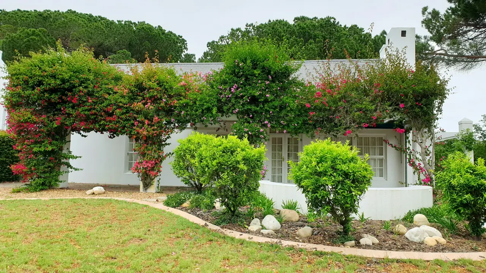
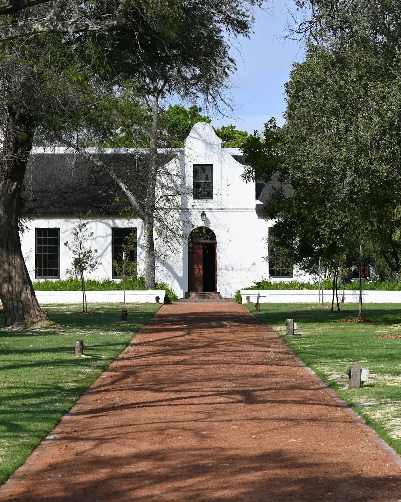
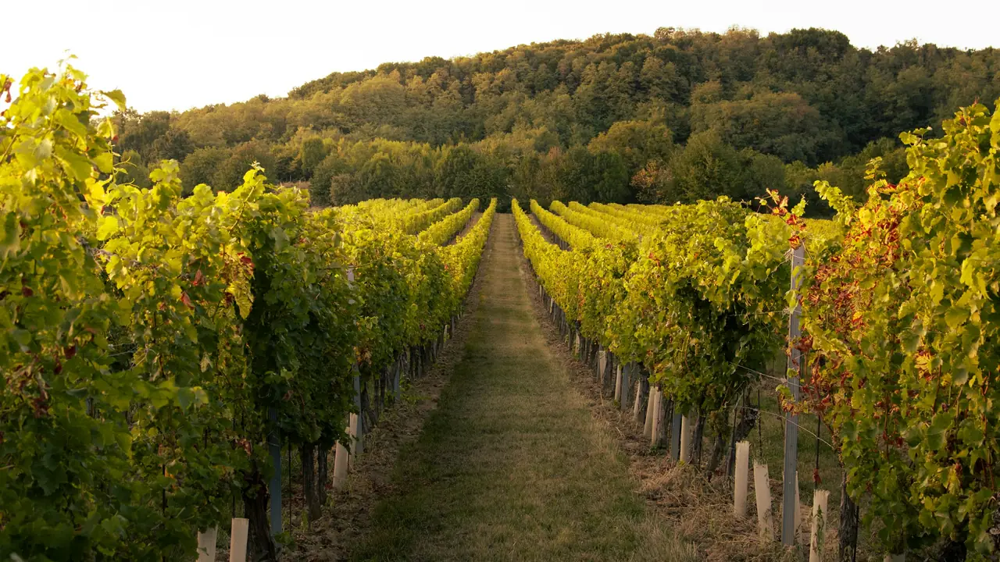
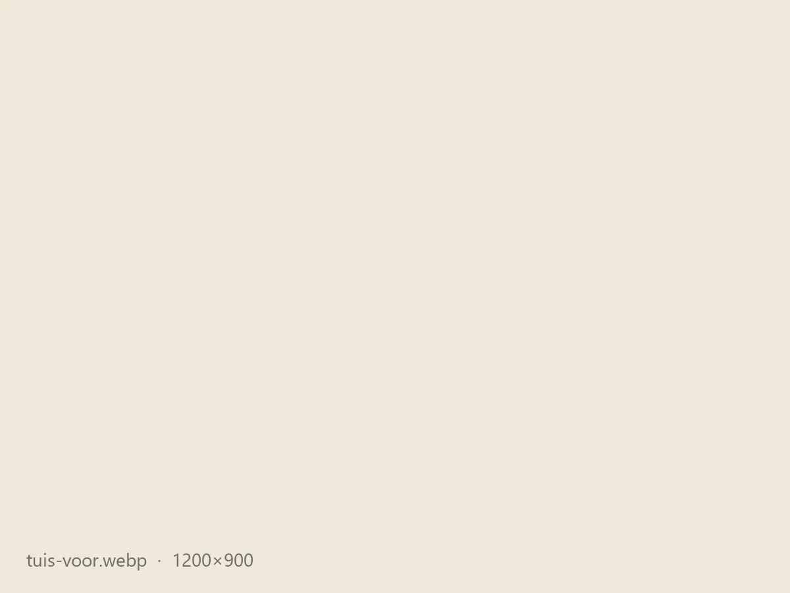

Woonhuise
Eenmalige skoonmaak of 'n vaste dag elke week of maand. Jy hoef nie eers tuis te wees nie.
Worcester-SentraalBrandwachtWorcester-Wes
Tuindienste · Worcester & omliggende plase
Als-in-1 Tuindienste versorg woonhuise in Worcester en plase in die vallei. Gras, beddings, rante en onkruidbeheer, gedoen deur een betroubare span.
Waarvoor soek jy hulp?
Gratis kwotasie · WhatsApp ons by [WHATSAPP-NOMMER]

Wat ons doen
Gelyk gesny en die kante skerp afgewerk.
Onkruid uit, beddings skoon en in vorm.
Rante en walle skoongemaak en onder beheer.
Onkruid op paadjies, opritte en rante gespuit.
Ingesluit. Alles wat ons sny, vat ons saam.
Huis of plaas

Eenmalige skoonmaak of 'n vaste dag elke week of maand. Jy hoef nie eers tuis te wees nie.

Rante, paaie, werf en werkershuise op 'n vaste skedule, beplan rondom jou seisoen.
Hoekom Als-in-1
Kwotasie binne [24] uur. Ons kom op die dag wat ons sê en maak klaar in een besoek.
Skerp kante, gevee paadjies, en geen hope vullis agtergelaat nie. Ons ry alles weg.
Dieselfde span op 'n vaste dag. Jy hoef nie te bel om ons te herinner nie.
Voor · Na

Wat kliënte sê
“[Resensie van 'n woonhuis-kliënt, 1–2 sinne]”
“[Resensie van 'n plaas-kliënt, 1–2 sinne]”
“[Resensie van 'n woonhuis-kliënt, 1–2 sinne]”
WhatsApp ons 'n foto van die tuin of plaas. Ons antwoord binne [24] uur met 'n prys.